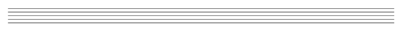
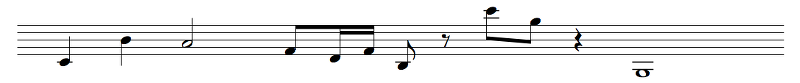

To start, here's the alphabet song! (I recorded it myself, so it sucks. Sorry.)

Example 1.1
I learned the alphabet in Portuguese. That's how my mom taught me the song. Blame her if you don't like it. So... yep. Let's go through it bit by bit, shall we?
This is a staff:
Example 1.2
It has five lines and four spaces. The staff is essentially a grid; each line and space corresponds to a note (well, there are always complications, but we'll get to them). Notes go on the staff and you can tell what the note is. So, for example, if you listen to my singing while looking at the music, you can see that the higher the note is on the staff, the higher the pitch of the note.
Here are some notes:
Example 1.3
Notes come in several different shapes meaning different things. The first two notes are called quarter notes; they have stems (that's the line coming out of the circle-looking part) that can point up or down. The direction of the stem is only to make things easier to read (but... we'll get to that). Quarter notes have filled in note heads (that's the circle-looking part). The third note, on the other hand, is a half note. Half notes are twice as long as quarter notes. Their note heads are not filled in.
Next comes an eighth note, two sixteenth notes, and another eighth note. Eighth notes have one line sticking out of the stem, while sixteenth notes have two. Eighth notes are obviously half the length of quarter notes, and sixteenth notes are half the length of eighth notes. When the line connects to another note, that line is called a beam; when it doesn't, it's called a flag. In that group of notes, the first three notes are beamed together, while the fourth has a flag. After it is an eighth rest, which is when you don't play (or sing) any note at all for the duration of an eighth note.
After the eighth rest there are two more eighth notes, beamed together, followed by a quarter rest. Finally, we have a whole note, which is twice the length of a half note. The whole note has a larger note head that is not filled in, and it has no stem.
We'll go into detail about these notes a bit later.
Ah, those are called ledger lines. The staff only has five lines and four spaces, so it only fits nine different notes. If you want to go higher or lower than the staff fits, you may have to add additional lines!
Hmmm. Not quite! See that symbol at the very beginning of Example 1.1? That's called a clef. That clef tells you what pitches the lines and spaces on the staff actually represent. We'll talk about those soon too.
There are a few more things in that picture. First, you'll see that below the notes there's some alien text. That's just the lyrics, which are in Portuguese. I will be showing you examples in many languages, but generally we write the lyrics below the notes. Notice how the rests don't have any lyrics?
Then, there are a bunch of vertical lines on the staff. Those are called bar lines, and the space between bar lines is called a bar or a measure (both terms are used interchangeably). You'll see that I numbered the measures. That's so that I can talk to you about what happens in bar 7 and you can look and see exactly what I mean. In real music, the measures may or may not be numbered for your convenience, but we'll get to that too, believe it or not.
Good question. It depends, I guess, but the most basic function of separating music into measures is so that you can follow it more easily. In the old days, when the popular sensation was Gregorian chant, they didn't have measures at all, like in Example 1.3.
But measures play especially well with time signatures. See that 4 on top of another 4 right at the top (the beginning of a piece of music is called the top) of Example 1.1? That's not a fraction, but we usually write it as one, 4/4. It's called the time signature. It means that every measure contains 4 beats, each of which is a quarter note. And, as you can see, measure 1 has four quarter notes! Measure 2 isn't so lucky, but the notes there add up to four quarter notes. Measure 4, though, has a different time signature: 3/4. That means that there are 3 beats in the measure, not 4. The top number is the number of beats in the measure, and the bottom number is which note counts as a beat.
We'll talk much more about this a little bit later, don't worry.
That's called a final bar line. It just means that the piece or movement is over.
Aha, the 3 means that those notes are triplets! An eighth note is half of a quarter note, but an eighth note triplet is a third of a quarter note instead.
So now you know the basics of how to read music! Not so hard, right?
Oh. Right. OK, let's go deeper so that we can answer those questions.